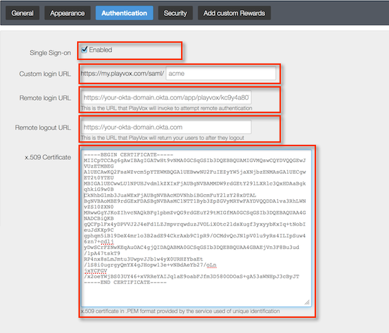

This setup might fail without parameter values that are customized for your organization. Please use the Okta Administrator Dashboard to add an application and view the values that are specific for your organization.
Log in to PlayVox and go to Settings > Community Settings > Authentication, as shown below.

Check Single Sign On as Enabled.
Set up a Custom Login URL. Use this URL to access PlayVox with the SP initiated SAML flow.
Copy and paste the following in the Remote Login URL field:
Sign into the Okta Admin dashboard to generate this value.
Copy and paste the following in the Remote Logout URL field: Sign into the Okta Admin dashboard to generate this value.
Copy the following certificate including the BEGIN and END lines in the x.509 Certificate field:
Sign into the Okta Admin dashboard to generate this value.